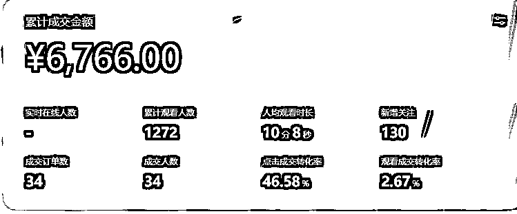
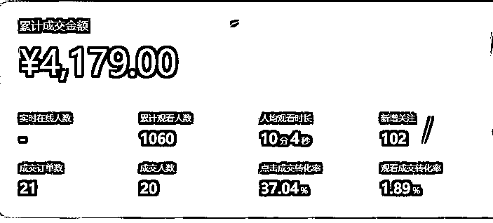
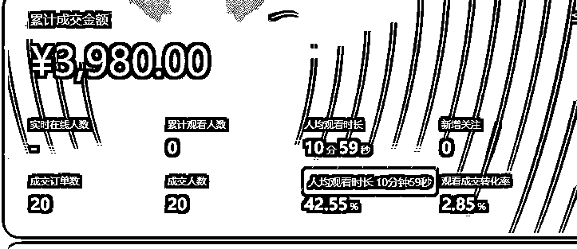
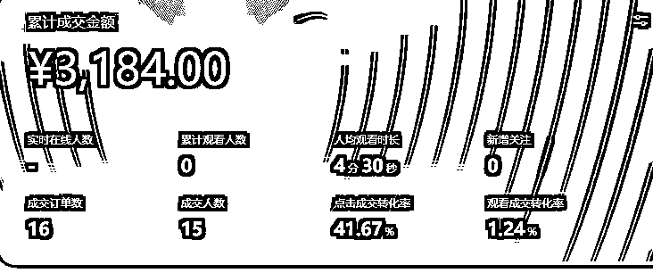
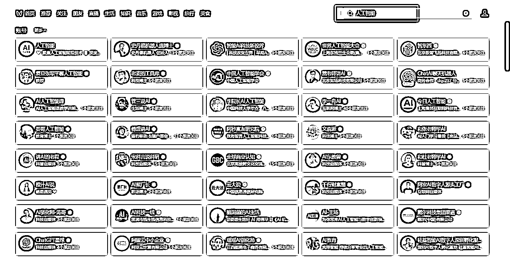
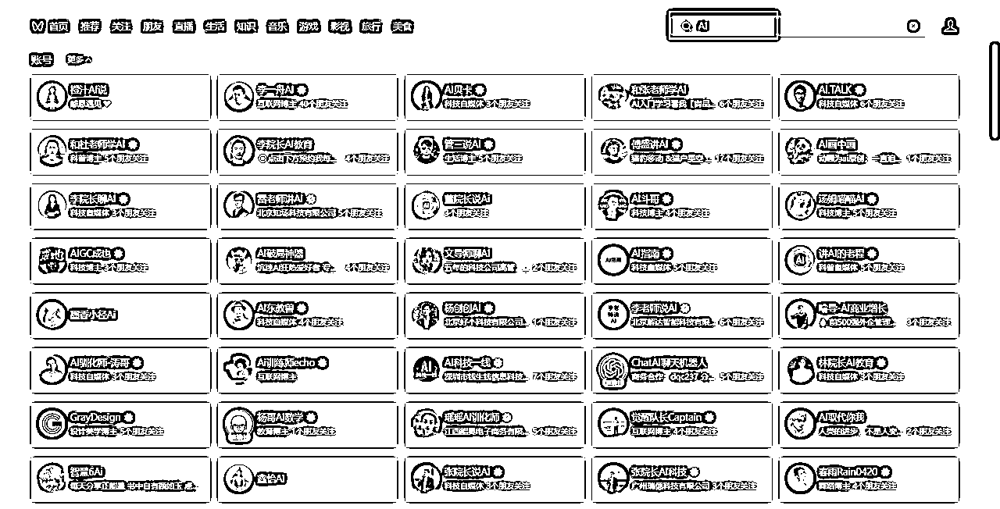

来源：https://fu92l5vu3n.feishu.cn/docx/N6cidKPTFoaknix5WRxcdg4VnSg
各位生财里的圈友，大家好。本篇文章我将介绍视频号知识付费从0到1的全部过程。如果你也想现在入局视频号真人口播，那一定要看完本篇文章。
先做个自我介绍吧，我叫耿一凡，加入生财圈子已经2年了。我最开始加入生财的时候，我当时还在公司里帮老板操盘项目，所以需要生财里的很多可以直接拿来落地实操的“术”。
我真正开始个人创业做项目，也就是今年年初，大概半年的时间。陆陆续续加入了3次关于视频号的航海，并且在过程中链接了许多志同道合的圈友，学习到很多实用的知识，最终才拿到今天可以与大家分享的这个结果：视频号两个月时间，累计涨粉10W+，变现6W+。
本次分享我会分为两部分来讲：
1、项目的全流程/模式+落地细节
2、我自己在做项目过程中的一系列实际的经历，以及个人的感悟
变现形式：都市银发人工智能知识付费赛道，通过真人口播拍摄短视频，发布短视频内容，引导用户预约直播，最终在直播间进行变现。
变现数据：目前一共运营了6个账号，每个账号每天稳定发布5条视频，航海期间发布了200条视频，内容一共授权6个账号，对于视频号平台来说，就是1200条视频。6个账号粉丝数共计是10W。直播的话，每个账号每周直播一场，平摊下来就是一天一场直播，在此期间累计变现了6W+。
以下几场数据还不错的直播截图，因为有过视频爆量的阶段，所以预约直播人数比较多，通过预约进来的观众转化普遍是很好的。以下是部分直播截图：




最开始我是在生财的精华帖上，看到了视频号现在正处于红利期，于是就直接下场来做，并且报名了视频号赛道的航海，在视频号上做知识付费。本次航海一共47天时间，相比于原来的21天时间，我个人的感觉是效果更好的。尤其是对于一个刚入局的新人来说，47天的长途陪伴，有问必答，基本上可以解决你在从0-1过程中遇到的全部问题，甚至是对你做1-10业务增量方面也有很大的便利。
做项目过程中，首先第一步，就是认真研读航海手册
航海手册可以解决做项目过程中80%的问题，尤其对于0-1的过程，基本上遇到的问题在手册里面都有。手册我总共加起来应该有5遍以上了，边看边去执行，每次看都会有新的收获，可能之前遗漏的点，或者之前没有注意到的，下一次看的时候才发现原来手册里面早就写好了标准答案。
第二步，我个人认为最重要的就是找品+找对标
这个是方向问题，方向对了，结果都不会差。
找品和找对标真的非常重要，我是知识付费赛道，我的品就是自己录制的在线课程。
找对标，我主要是通过两个方式去找：
1.视频号上搜索关键词
2.准备一台手机专门用来刷相关的视频
我现在一般是2-3天，会集中一个时间刷1个小时的视频，通过这两个方式，我找到了大量的同行的账号，还有近期的爆款视频。


第三步，就是根据找到的爆款视频，去做混剪或者是仿拍
我是做真人口播的，所以主要是拿到别人的口播文案，自己再去仿拍一版。具体怎么去做混剪和仿拍，手册里面写得也是非常清楚了，我再次就不赘述了。
第四步，就是要建立自己的“内容工厂”，做到每天可以稳定批量的去生产视频并且发布
我们做项目肯定是想做长期的项目，所以每天稳定的内容生产是非常重要的。“不爆是常态，爆了才变态。”这句话真的很精辟。我也是经历了很长一段时间一直不爆视频的痛苦，也是后面在航海手册上看到了这句话，一下子就悟了。
这也是我刚才强调的，每个阶段都可以去看看手册，因为每个阶段的我们对于视频号业务的理解都是不一样，可能里面的某一句话突然就能点醒你。里面都是大佬们做项目时总结出来的精华。
每个行业、每个话题都有红利期，可能前段时间，一个话题在视频号上很火，只要发相关视频就很容易爆，但是过两个月就很难爆了。这是很正常的事情。所以一个优秀的模式，应该是在视频不爆的情况下，变现仍然可以很好。所以基础的视频批量化生产，这个能力是后期一定要有的。爆量属于锦上添花，不要依赖爆款。
第五步，直播
我的模式主要就是通过直播变现，视频引导用户预约直播，最终在直播间转化。
直播的话，我主要是参考同行的直播，把同行的直播脚本复制过来，再加以修改为自己熟悉的语句，保证在直播过程的流畅性。直播也是需要练习的。前5场直播基本上可以把直播的脚本熟悉，把自己的直播录屏下来，对比同行，还有一些大IP（不局限于同行），学习他们的长处。
在没有经历过100场直播之前，都不能说自己直播能力有多强。当然，先天的直播圣体当我没说，毕竟这是一个熟能生巧的事情，找到直播时的松弛感，千万别像个人机。
感悟一：在一些关键节点，有贵人相助将使你快速成长
在最开始做项目的时候，当时也比较迷茫，到底选择哪条赛道？最开始是想做抖音的个人IP，做人工智能知识付费，尝试了2个月，一直没有数据方面的进展。（但是在此过程中还是学到了很多技能的，比如短视频拍摄剪辑、直播能力、以及店铺的上架和运营等）。
在抖音平台业务停滞不前时，也是在机缘巧合之下，我看到了生财里的一篇精华帖，讲的就是在视频号上做人工智能知识付费。出自圈里的一位大佬陈锦亿之手。我也是立马和锦亿加上了微信，并且向他请教学习视频号知识付费的相关玩法。目前我的这套运营方法，主要就是向他请教学习得来的，这也是我在这个项目中结识的第一位贵人。
并且，也是在近期我认识了汪淼教练和家瑞教练，我当时是在群里请教问题，然后汪淼教练一看我的直播间截图很熟悉，于是就加了我的微信。加上微信之后呢，我发现他们一直是我在模仿的对标，十分震惊。他们的业务比我大很多，抄了他们很多文案了，哈哈。
近期也是向王淼教练和家瑞教练请教了非常多的业务细节，他们也是毫无保留，全部跟我做了分享。并且他们团队的优质视频也全部可以授权给我去发布，剪辑、课程、售后、直播资源全部与我共享，解决了我在业务拓展方面的很多问题。
所以生财这个圈子真的是宝藏圈子，里面藏龙卧虎，有时候链接到一位大佬，与其深入沟通之后，可以解决自己在做业务过程中的很多难点，少走很多弯路。
感悟二：快速执行快速迭代，从0到1，再从1到10
在项目方向选定之后，下一步就是起号发布视频了，视频号的新号确实是有流量扶持的，最开始起的2个账号，其中一个账号在我口播能力还不强的时候，就直接爆了一条100W的视频，也是在这段时间里，抓紧开播，完善直播脚本，课程上架，完善售后，跑通了整个项目的闭环。并且近期也是开始继续起矩阵账号，尝试放大项目。
在项目放大的过程中呢，也是在航海中学到了很多降本增效的方法，比如说通过账号授权，来放大一条视频的效果，一条视频授权6个账号发布，通过矩阵号运营工具来进行视频的批量发布等等。并且现在也将视频剪辑的工作外包出去，我个人也把精力更多投入到更重要的事情上。
现在也与更多的主播合作去口播，测试别人的口播视频效果。并且继续起号，去做项目的放大。目前团队里一共有2名主播，1名剪辑，1名运营。我现在也还是在1-10的路上。
感悟三：讲讲直播中遇到的一些坑
关于直播方面，现在已经变成一个常态化的事情了，每周都会稳定6场直播，每场直播40分钟的一套固定的脚本。
在我最开始直播的时候，其实还是踩了一些坑的。比如直播设备如何选购这个问题，还有直播的绿幕抠像，这些都是花了很大精力才从小红书、淘宝等各个渠道问清楚的。因为我在最开始做项目的时候，航海还没有开始，如果当时有一个航海手册，那会少走太多弯路的。
并且在最开始的时候不熟悉的时候，直播预约功能出了问题，我很清楚的记得，在我直播的第三场，我丢失了一个8000人预约的直播，按照我常规的转化，8000人预约的直播预计会带来2W的销售额。当时是因为我想在正式开播之前，提前试播一下，没想到视频号在这里的逻辑非常奇怪，私密直播也会消耗这次的直播预约，导致通知了8000人，但是所有观众都进不来。所以这个惨痛的经历提醒一下各位圈友，大家如果在做预约直播的时候，记得避雷。
和各位圈友一起共勉
我是非常感谢生财这个圈子的，有这么多可以直接落地，非常实用的方法，还有这么多热心的教练/圈友，让我感到创业的路上是不孤单的。在航海群里，所有问题都是有问必答，真的非常靠谱。在这里感谢所有教练、领队、志愿者、圈友。
当然，在航海群里也是看到了很多刚开始做视频号的圈友。大家一起加油，创业路上最重要的就是坚持。我在创业过程中的一个感觉就是，隔一段时间就会突然间有一个增长点，然后平稳，再到瓶颈，又隔一段时间就会又有一个增长点。这个增长点可能是最直接的销售额的增长，也有可能是个人某一方面的能力，也有可能是个人心态上的成长。
这个是我在做视频号这个过程中，很明显的一个体感。所以最重要的就是坚持，多做多练多想。
加油各位，我们一起生财有术！